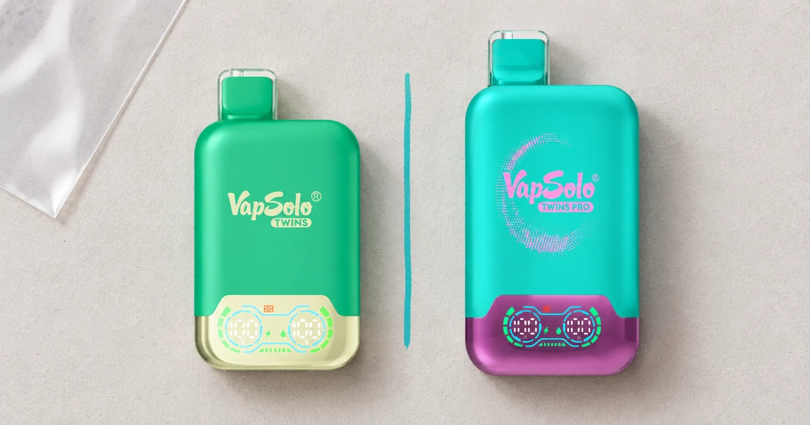
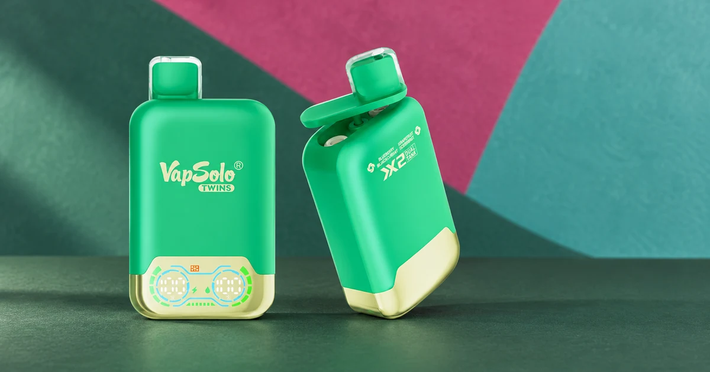
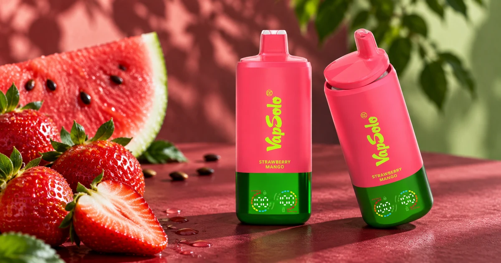
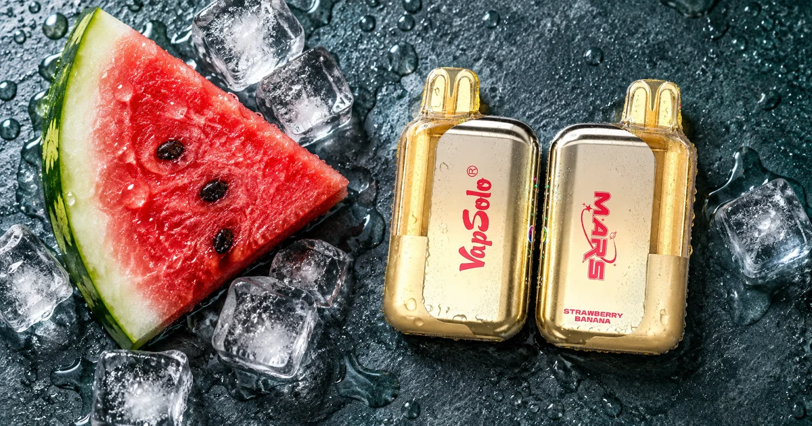

Caladas
Caladas
Qué son las caladas en un vaper y cómo interpretarlas
Una cifra anunciada que conviene usar como referencia, no como duración garantizada.
Leer artículo →Guías en español para entender caladas, formatos, sabores de vaper y e-líquido. Son contenidos informativos para adultos y no sustituyen las instrucciones ni el etiquetado de cada producto.
Caladas
Una cifra anunciada que conviene usar como referencia, no como duración garantizada.
Leer artículo → Comparativa
Comparativa
Tres formatos con varios perfiles comparados sin promesas de duración.
Leer artículo →
Dos saboresQué revisar al comparar un vaper de dos sabores.
Leer artículo → Guía de compra
Guía de compra
Formato, sabores, caladas anunciadas y ficha de la variante exacta.
Leer artículo →
SaboresQué comunica una denominación comercial y qué conviene confirmar.
Leer artículo →
SaboresCómo interpretar un nombre de dos frutas sin asumir su composición.
Leer artículo →
SaboresUna guía para diferenciar una referencia de frescor de una ficha técnica.
Leer artículo → Dispositivos
Dispositivos
La batería, el pod y el líquido no describen la misma función.
Leer artículo → Conceptos
Conceptos
E-líquido, nicotina y compatibilidad explicados con lenguaje claro.
Leer artículo →